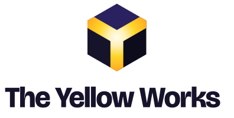
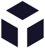
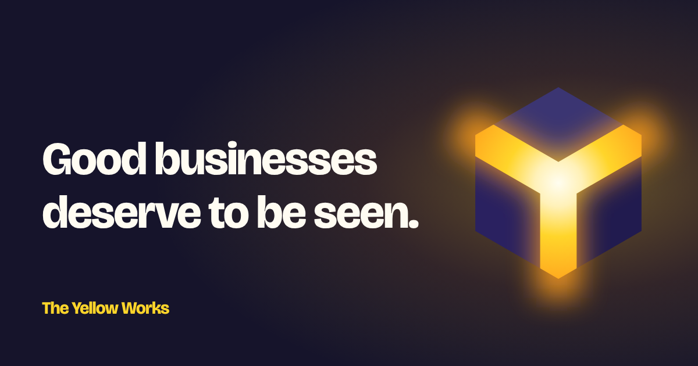

Primary lockups
Horizontal is the default. Stacked is for square or narrow spaces. The cube and the name are always used together at launch.
 Horizontal, on Paper or white
Horizontal, on Paper or white Horizontal, reversed on Dusk
Horizontal, reversed on Dusk
Stacked
Stacked, reversedColour variants
Full colour on light, yellow on Dusk, Dusk on yellow, mono black and mono white. The mono marks have the Y cut out, so they sit on any background, including photographs.

Dusk on yellow
Glow mark (dark backgrounds only)Favicon and app icons
The SVG favicon switches to lighter cube faces in dark browser tabs. PNG and ICO fall back for older browsers. At 16 px the Y gets heavier so it stays clear.
The dark-tab preview here is the same file: your browser applies its own colour scheme to the real tab. Only the light version is previewed on this page unless your system is in dark mode.
Avatar and social image

Open Graph 1200 × 630 (template:og-template.svg)Animated logo
The seams flicker on in 1.4 seconds and settle. Plays once. With reduced motion on, it shows the finished mark immediately.
Static fallback: mark-color-glow.svg.
Clear space and minimum size
Lockup: 120 px wideBelow 24 px, use mark-small.svg (heavier Y, no glow). Never use the glow mark under 48 px.
Misuse
What is in this set
SVG: marks (colour, glow, small, Dusk, black, white), five colour variants, six lockups, adaptive favicon, avatar, Open Graph template, maskable icon, animated logo. PNG and ICO: favicons 16/32/48, Apple touch 180, PWA 192/512, avatar 800, Open Graph 1200 × 630, mark and lockup renders. The wordmark in lockups, the Open Graph template and the PNGs is outlined into paths from Bricolage Grotesque, so no font is needed to display any of these files. Fonts are not used inside any SVG. The 3D GLB of the cube is part of the hero 3D work and is not done yet.